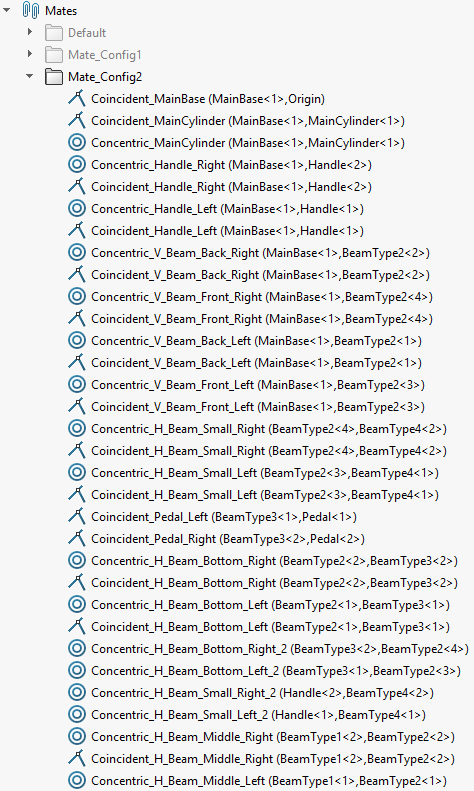
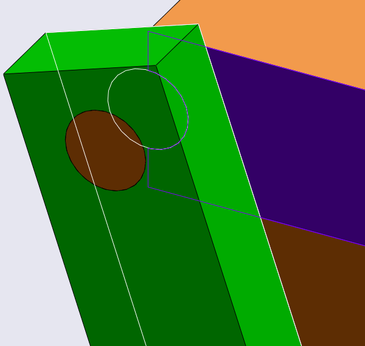
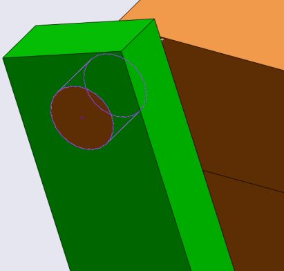

Making the translated AnyScript model move¶
If you did not finish the previous lesson, you can download the finished
AnyScript model file here:
FitnessMachine_Mate_Config1.zip
Add an AnyBodyStudy object and a kinematic motion driver¶
As previously mentioned, the exported model comes out of SOLIDWORKS and into AnyBody with one degree-of-freedom. In this lesson, we add a driver to this degree-of-freedom and thereby make the exercise machine move inside AnyBody.
We will make these additions to the model in the Main file, but since ‘FitnessMachine.main.any’ was generated by the AnyBody Exporter™ for SOLIDWORKS® (AnyExp4SOLIDWORKS™) and will be overwritten next time we update the translation, we shall make our own copy before editing. We call this new Main file ‘My.FitnessMachine.main.any’.
The first step is to add a study object to the Main file. The study contains the necessary operations that will perform a kinematic analysis, which is the way how AnyBody moves the model. Let us add an AnyBodyStudy object to make this model work for kinematic and inverse dynamic analyses.
Main =
{
#include "FitnessMachine.any"
AnyBodyStudy Study =
{
AnyFolder& Model = .FitnessMachine;
tStart = 0;
tEnd = 1;
nStep = 101;
Gravity = {0, -9.81, 0};
};
};
Notice how the ‘FitnessMachine’ folder is added by a reference so that the study object “knows the model” that it must study.
The next step is to add a motion driver to determine the position of the single degree-of-freedom at every time step and thereby the entire mechanism. The logical and simple choice is to drive the angle of the flywheel. As we saw before, the imported model in AnyBody is almost completely equivalent in structure to the SOLIDWORKS model, so we can use the latter to look for a place to attach the driver.

The ‘Concentric01’ mate is a relationship between two cylindrical faces of the ‘MainBase<1>’ and ‘MainCylinder<1>’ components. This mate contains two linear and two rotational constraints between two different components. So this mate can still allow two degrees of freedom: 1 translational and 1 rotational movement. Let us look the definition of this ‘Concentric01’ mate inside AnyScript.
AnyKinEqSimpleDriver Concentric01 =
{
AnyKinLinear lin =
{
AnyRefFrame& base = ...MainBase___1.FitnessMachine_Concentric01;
AnyRefFrame& target = ...MainCylinder___1.FitnessMachine_Concentric01;
Ref = 0;
};
AnyKinRotational rot =
{
AnyRefFrame& base = ...MainBase___1.FitnessMachine_Concentric01;
AnyRefFrame& target = ...MainCylinder___1.FitnessMachine_Concentric01;
Type = PlanarAngles;
Axis1 = z;
Axis2 = y;
Axis3 = x;
};
MeasureOrganizer = {0, 1, 4, 5};
DriverPos = {0, 0, 0, 0};
DriverVel = {0, 0, 0, 0};
CType = {.._ANY_CTYPE_, .._ANY_CTYPE_, .._ANY_CTYPE_, .._ANY_CTYPE_};
};
We can see that there is one AnyKinLinear and one AnyKinRotational kinematic measure for this mate. The rotation is obviously related to the AnyKinRotational object so let us use this to define a kinematic driver. We can do this because the rotational measure ‘rot’ is already measuring the angle; the ‘PlanarAngles’ type gives us one real angle and two special out-of-plane measurements, which are already constrained to be zero, i.e. in-plane, by the translated code. The remaining real angle, i.e. the first component of the ‘rot’ measure, can be constrained by a driver. We add this to the FitnessMachine AnyFolder from the Main file.
Main =
{
#include "FitnessMachine.any"
FitnessMachine =
{
AnyFolder Drivers =
{
AnyKinEqSimpleDriver rot_drv =
{
AnyKinRotational& rot = ..Mates.Concentric01.rot;
MeasureOrganizer = {0};
DriverPos = pi/180*{0};
DriverVel = pi/180*{180};
};
};
};
AnyBodyStudy Study =
{
AnyFolder& Model = .FitnessMachine;
tStart = 0;
tEnd = 1;
nStep = 101;
Gravity = {0, -9.81, 0};
};
};
If you load this modified model, you will see the following warnings.
“Model Warning: Study ‘Main.Study’ contains more reaction forces than rigid-body degrees of freedom of the segments. The model may be statically indeterminate. There are 122 reactions and only 96 rigid body degrees of freedom.”
Also, if you try to run InverseDynamics analysis for this model, it will cause some kinematic errors. The reason for these warnings and errors is that there are redundant mates, i.e. there are more kinematic constraints than necessary to constrain the model. This is generally unsound and these additional constraints should be eliminated. There is a simple way to try to solve this situation in AnyBody without changing the SOLIDWORKS model. We shall try this first.
Firstly, we change the solver type of the AnyBodyStudy object and the constraint type of all constraints in the translated model:
AnyBodyStudy Study =
{
AnyFolder& Model = .FitnessMachine;
tStart = 0;
tEnd = 2;
nStep = 101;
Gravity = {0, -9.81, 0};
InitialConditions.SolverType = KinSolOverDeterminate;
Kinematics.SolverType = KinSolOverDeterminate;
};
And in the ‘FitnessMachine.any’ file we change the type of all kinematic constraints created from mates in the SOLIDWORKS model.
AnyFolder FitnessMachine =
{
AnyKinEqType _ANY_CTYPE_ = Soft;
...
}
The significance of these new specifications is to switch to a kinematic solver algorithm that allows violation of kinematic constraints if these are considered soft, and therefore we define all of the constraints indiscriminately as ‘Soft’.
After reloading the model, you may be able to run Kinematics or InverseDynamics analysis. But this modification of solver and constraints types ‘does not’ guarantee the successful performance of kinematic analysis. Even if you can run your over-constrained model successfully, there is one significant remaining problem: Generally speaking, if there are redundant constraints in your model, it implies that there are also redundant reaction forces in your models, since kinematic constraints and reaction forces are connected one-to-one. In this case, there may not be a unique solution for those unknown reaction terms to be found by the InverseDynamics analysis.
Having too many reactions in a rigid-body dynamics model is similar to what is called “statically indeterminacy” in structural mechanics. To solve such problems, you need to know about the structural deformations to establish the reaction forces and this involves the stiffness of the structures, which we do not have or use in the rigid-body dynamic analysis. To make a unique solution of the forces in rigid-body dynamics, we must reduce the constraint reactions to match the independent set of constraints. In other words, we must remove the redundant constraints and thereby their reactions.
You may ask whether this is a choice of mathematical convenience for the solvers to handle the problem? It is indeed mathematically convenient, but it is also sound engineering practice in mechanism design not to make you mechanisms over-constrained, not even if it is redundant constraints. Manufacturing tolerances could make redundant constraints actually conflict, leading to mechanism locking and extensive wear. Therefore sound engineering design is to make sure that constraints and reactions do not conflict and it is your task to introduce these engineering design decisions properly into your models.
There are two ways to approach this task: editing your AnyScript model directly or editing your mate definitions in SOLIDWORKS and re-exporting it. We shall here adopt the latter approach.
Removing redundant mates in SOLIDWORKS before doing the translation¶
If your SOLIDWORKS CAD model has a very complex structure, then it may be difficult to modify the AnyScript model to remove the redundant constraints. Furthermore, in an interactive design process, you may wish to work with the SOLIDWORKS model and re-export it repeatedly to AnyBody. In this case, it is probably a better choice to solve the redundancy problem directly in the CAD system.
For this purpose, the SOLIDWORKS example model has already been set up
with different configurations. If you open the previous
FitnessMachine_SOLIDWORKS.zip
file again in SOLIDWORKS, then you can create a new configuration and
start changing its mate definitions. We have in this model file already
created two new configurations with the results of the modification we
suggest to remove kinematic redundancy.


We can find the main reason of mate redundancy in SOLIDWORKS by examining several mates, which are used between two different parts in the assembly.
Firstly, let us look at two mates at the ‘Mate_Config1’ configuration of the top assembly. All the mates which were used in this configuration can be classified as one of the standard mate types of SOLIDWORKS. Let us find the mates, which are defined between the ‘MainBase<1>’ and ‘BeamType2<1>’ components.
| Mate Type | Mate Name in the SOLIDWORKS feature tree | Related Components | Mate Entity Types | Snapshot |
|---|---|---|---|---|
| Coincident | Coincident12 | MainBase<1> | Plane |  |
| BeamType2<1> | Plane | |||
| Concentric | Concentric12 | MainBase<1> | Cylinder |  |
| BeamType2<1> | Cylinder |
The intention of using these two mates is to replicate a revolute (hinge) joint between the ‘MainBase<1>’ and ‘BeamType2<1>’ parts. So we used a Coincident (Plane-Plane) and a Concentric (Cylinder-Cylinder) mate for this purpose. A Coincident (Plane-Plane) mate contains 1 linear and 2 rotational constraints, and a Concentric (Cylinder-Cylinder) mate contains 2 linear and 2 rotational constraints. So the sum of constraints from these two mates is 7 constraints. But a revolute (hinge) joint should contain 3 linear and 2 rotational constraints. So by introducing these two mates this way, there will be 2 redundant rotational constraints.
Then, let us find the mates defined between the ‘MateBase<1>’ and ‘BeamType2<1>’ components in the ‘Mate_Config2’ assembly configuration setting.
| Mate Type | Mate Name in the SOLIDWORKS feature tree | Related Components | Mate Entity Types | Snapshot |
|---|---|---|---|---|
| Coincident | Coincident_V_Beam_Back_Left | MainBase<1> | Plane |  |
| BeamType2<1> | Point | |||
| Concentric | Concentric_V_Beam_Back_Left | MainBase<1> | Cylinder | |
| BeamType2<1> | Cylinder |
In this ‘Mate_Config2’ configuration, we used a Coincident (Point-Plane) and a Concentric (Cylinder-Cylinder) mate instead. A Coincident (Point-Plane) mate contains only 1 linear constraint. So the sum of constraints from these two mates are 5 (3 linear and 2 rotational). Then the combination of these two mates will work the same as a revolute joint. If you prefer to use the standard mate types of SOLIDWORKS, then you can create revolute joints using a Coincident (Point-Plane) and a Concentric (Cylinder-Cylinder) mate. Or you can use a Coincident (Plane-Plane) and a Concentric (Point-Cylinder) mate instead.
A good feature of SOLIDWORKS, is that SOLIDWORKS can handle some amount of redundant mates if they are well defined, but since we are really interested in the reaction forces of your mechanism, then it is important for us to eliminate the redundancy of mates in the models completely.
In the second configuration, ‘Mate_Config2’, we have applied more similar changes until the model is well-defined without redundant constraints. Basically almost all joints in the model are hinges from a first look and therefore they all need to be reduced to having only five constraints, like explained above. However, it turns out that this is not enough to remove redundancy. What is still missing is that we have closed loops, and making a closed loop with only hinges only works here because all hinges are parallel. In other words, we have a planar mechanism, but if the hinges were not parallel the mechanism would be locked or maybe not even possible to assemble. Some of the “hinges” have here been further reduced so they match what in AnyBody is called a trans-spherical joint (AnyTransSphericalJoint), i.e., a spherical joint which also allows one translation, here along the hinge axis. These joint have only two translational constraints, which implies that they do not carry moments or an axial force.
The selection of these reduced joints, has been made based on the actual joints in the machine, or the assumed actual joints, since this is constructed case. So the “strong” hinge with good hinge bearings are made as real hinges, while “less strong” joints with clearances and simpler bearings are made as trans-spherical joints.
In the SolidWork assembly, ‘Mate_Config2’, you can see our choices. We have tried to make it visible by making the “real hinges” with a real cylindrical part fitting a cylindrical hole, whereas the “reduced hinges” have a reduced graphical representation like empty holes or nothing.
There is a slightly alternative way to reduce mate redundancy. You can use some of the mechanical mate types of SOLIDWORKS. Let us change the assembly configuration to ‘Mate_Config3’ as follows. Here we have entered topologically the same joint configuration as in ‘Mate_Config2’, but using the mechanical mates as much as possible. We have named the mates according to the joint type we want to realize. The trans-spherical joint type does not exist in SOLIDWORKS, so this has been created with standard mates as in ‘Mate_Config2’.


As you can see in ‘Mate_Config3’, the usage of Hinge mates reduces the total number of mates because a hinge mate requires four mate entities when it is defined with standard mates. The trans-spherical constraint is however realized simply by a Concentric(Point-Cylinder) mate. It will work the same as the AnyTransShericalJoint in AnyBody, but the AnyExp4SOLIDWORKS translator does not realize that it is a joint and will only make a simple object with kinematic constraints as we saw in Lesson 1.
We prefer the solution in ‘Mate_Config3’, since this approach is closer to concepts we normally use with AnyBody, but ‘Mate_Config2’ and ‘Mate_Config3’ are mechanically equivalent.
Translate a SOLIDWORKS assembly which doesn’t have any redundant mates¶
Let us translate the assembly under the ‘Mate_Config3’ configuration into an AnyScript model by using AnyExp4SOLIDWORKS like you did in Lesson 1. You can now open the model with the newly generated ‘FitnessMachine.main.any’ file, where you will see the model or you can open your own version ‘My.FitnessMachine.main.any’ file where you added the study object and the rotation driver. The latter model will now work, i.e., you can run the ‘Kinematics’ operation in the ‘Study’, and it will do one revolution of the machine. You can also run the ‘InverseDynamics’ without any complaints.
In order to do a simple review of the degrees of freedom of the translated model try removing the driver, or just add the study to the generated ‘FitnessMachine.main.any’, so you load a file like this:
Main =
{
#include "FitnessMachine.any"
AnyBodyStudy Study =
{
AnyFolder& Model = .FitnessMachine;
tStart = 0;
tEnd = 1;
nStep = 101;
Gravity = {0, -9.81, 0};
};
};
When you load this model, then you will see the following warning message:
Model Warning: Study ‘Main.Study’ contains too few kinematic constraints to be kinematically determinate.
Let us see the object description of the AnyBodyStudy object.

This assembly contains 16 components, i.e. segments. So this assembly has a total 96 degrees of freedom when disregarding the constraints. But then a total number of constraints from the mates of 95 is removed, which means that only 1 degree of freedom is left. This is as expected for the mechanism and this is the degree of freedom driven by the driver, we have previously added.
You can successfully run the ‘Kinematics’ and ‘InverseDynamics’ operations of the AnyBodyStudy object and we are now ready to adding the human to the model in the final Lesson 3.
See also
Next lesson: Creating human-machine integrated analysis model.
 Please report it here...
Please report it here...